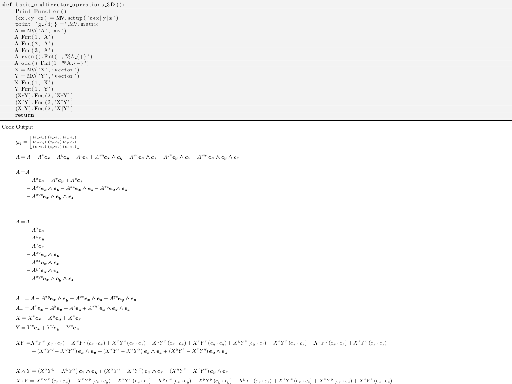

Geometric Algebra¶
| Author: | Alan Bromborsky |
|---|
Abstract
This document describes the implementation, installation and use of a geometric algebra module written in python that utilizes the sympy symbolic algebra library. The python module galgebra has been developed for coordinate free calculations using the operations (geometric, outer, and inner products etc.) of geometric algebra. The operations can be defined using a completely arbitrary metric defined by the inner products of a set of arbitrary vectors or the metric can be restricted to enforce orthogonality and signature constraints on the set of vectors. In addition the module includes the geometric, outer (curl) and inner (div) derivatives and the ability to define a curvilinear coordinate system. The module requires the sympy module and the numpy module for numerical linear algebra calculations. For latex output a latex distribution must be installed.
What is Geometric Algebra?¶
Geometric algebra is the Clifford algebra of a real finite dimensional vector space or the algebra that results when a real finite dimensional vector space is extended with a product of vectors (geometric product) that is associative, left and right distributive, and yields a real number for the square (geometric product) of any vector [Hestenes], [Doran]. The elements of the geometric algebra are called multivectors and consist of the linear combination of scalars, vectors, and the geometric product of two or more vectors. The additional axioms for the geometric algebra are that for any vectors \(a\), \(b\), and \(c\) in the base vector space ([Doran],p85):
By induction the first three axioms also apply to any multivectors. The dot product of two vectors is defined by ([Doran],p86)
Then consider
Thus \(a\cdot b\) is real. The objects generated from linear combinations of the geometric products of vectors are called multivectors. If a basis for the underlying vector space is the set of vectors formed from \(e_{1},\dots,e_{n}\) a complete basis for the geometric algebra is given by the scalar \(1\), the vectors \(e_{1},\dots,e_{n}\) and all geometric products of vectors
Each base of the complete basis is represented by a noncommutative symbol (except for the scalar 1) with name \(e_{i_{1}}\dots e_{i_{r}}\) so that the general multivector \(\boldsymbol{A}\) is represented by (\(A\) is the scalar part of the multivector and the \(A^{i_{1},\dots,i_{r}}\) are scalars)
The critical operation in setting up the geometric algebra is reducing the geometric product of any two bases to a linear combination of bases so that we can calculate a multiplication table for the bases. Since the geometric product is associative we can use the operation (by definition for two vectors \(a\cdot b \equiv (ab+ba)/2\) which is a scalar)
These processes are repeated untill every basis list in \(\boldsymbol{A}\) is in normal (ascending) order with no repeated elements. As an example consider the following
which results from repeated application of equation 5.1. If the product of basis vectors contains repeated factors equation 5.1 can be used to bring the repeated factors next to one another so that if \(e_{i_{j}} = e_{i_{j+1}}\) then \(e_{i_{j}}e_{i_{j+1}} = e_{i_{j}}\cdot e_{i_{j+1}}\) which is a scalar that commutes with all the terms in the product and can be brought to the front of the product. Since every repeated pair of vectors in a geometric product of \(r\) factors reduces the number of noncommutative factors in the product by \(r-2\). The number of bases in the multivector algebra is \(2^{n}\) and the number containing \(r\) factors is \({n\choose r}\) which is the number of combinations or \(n\) things taken \(r\) at a time (binominal coefficient).
The other construction required for formulating the geometric algebra is the outer or wedge product (symbol \(\wedge\)) of \(r\) vectors denoted by \(a_{1}\wedge\dots\wedge a_{r}\). The wedge product of \(r\) vectors is called an \(r\)-blade and is defined by ([Doran],p86)
where \(\epsilon^{i_{j_{1}}\dots i_{j_{r}}}\) is the contravariant permutation symbol which is \(+1\) for an even permutation of the superscripts, \(0\) if any superscripts are repeated, and \(-1\) for an odd permutation of the superscripts. From the definition \(a_{1}\wedge\dots\wedge a_{r}\) is antisymmetric in all its arguments and the following relation for the wedge product of a vector \(a\) and an \(r\)-blade \(B_{r}\) can be derived
Using equation 5.2 one can represent the wedge product of all the basis vectors in terms of the geometric product of all the basis vectors so that one can solve (the system of equations is lower diagonal) for the geometric product of all the basis vectors in terms of the wedge product of all the basis vectors. Thus a general multivector \(\boldsymbol{B}\) can be represented as a linear combination of a scalar and the basis blades.
Using the blades \(e_{i_{1}}\wedge e_{i_{2}}\wedge\dots\wedge e_{r}\) creates a graded algebra where \(r\) is the grade of the basis blades. The grade-\(r\) part of \(\boldsymbol{B}\) is the linear combination of all terms with grade \(r\) basis blades. The scalar part of \(\boldsymbol{B}\) is defined to be grade-\(0\). Now that the blade expansion of \(\boldsymbol{B}\) is defined we can also define the grade projection operator \(\left < {\boldsymbol{B}} \right >_{r}\) by
and
Then if \(\boldsymbol{A}_{r}\) is an \(r\)-grade multivector and \(\boldsymbol{B}_{s}\) is an \(s\)-grade multivector we have
and define ([Hestenes],p6)
where \(\boldsymbol{A}_{r}\cdot\boldsymbol{B}_{s}\) is called the dot or inner product of two pure grade multivectors. For the case of two non-pure grade multivectors
\[\begin{align*} \boldsymbol{A}\wedge\boldsymbol{B} &= \sum_{r,s}\left < {\boldsymbol{A}} \right >_{r}\wedge\left < {\boldsymbol{B}} \right >_{s} \\ \boldsymbol{A}\cdot\boldsymbol{B} &= \sum_{r,s\ne 0}\left < {\boldsymbol{A}} \right >_{r}\cdot\left < {\boldsymbol{B}} \right >_{s} \end{align*}\]
Two other products, the right (\(\rfloor\)) and left (\(\lfloor\)) contractions, are defined by
\[\begin{align*} \boldsymbol{A}\lfloor\boldsymbol{B} &\equiv \sum_{r,s}\left \{ \begin{array}{cc} \left < {\boldsymbol{A}_r\boldsymbol{B}_{s}} \right >_{r-s} & r \ge s \\ 0 & r < s \end{array}\right \} \\ \boldsymbol{A}\rfloor\boldsymbol{B} &\equiv \sum_{r,s}\left \{ \begin{array}{cc} \left < {\boldsymbol{A}_{r}\boldsymbol{B}_{s}} \right >_{s-r} & s \ge r \\ 0 & s < r\end{array}\right \} \end{align*}\]
A final operation for multivectors is the reverse. If a multivector \(\boldsymbol{A}\) is the geometric product of \(r\) vectors (versor) so that \(\boldsymbol{A} = a_{1}\dots a_{r}\) the reverse is defined by
\[\begin{align*} \boldsymbol{A}^{\dagger} \equiv a_{r}\dots a_{1} \end{align*}\]
where for a general multivector we have (the the sum of the reverse of versors)
note that if \(\boldsymbol{A}\) is a versor then \(\boldsymbol{A}\boldsymbol{A}^{\dagger}\in\Re\) and (\(AA^{\dagger} \ne 0\))
Representation of Multivectors in Sympy¶
The sympy python module offers a simple way of representing multivectors using linear combinations of commutative expressions (expressions consisting only of commuting sympy objects) and noncommutative symbols. We start by defining \(n\) noncommutative sympy symbols
(e_1,...,e_n) = symbols('e_1,...,e_n',commutative=False)
Several software packages for numerical geometric algebra calculations are available from Doran-Lasenby group and the Dorst group. Symbolic packages for Clifford algebra using orthongonal bases such as \(e_{i}e_{j}+e_{j}e_{i} = 2\eta_{ij}\), where \(\eta_{ij}\) is a numeric array are available in Maple and Mathematica. The symbolic algebra module, galgebra, developed for python does not depend on an orthogonal basis representation, but rather is generated from a set of \(n\) arbitrary symbolic vectors, \(e_{1},e_{2},\dots,e_{n}\) and a symbolic metric tensor \(g_{ij} = e_{i}\cdot e_{j}\).
In order not to reinvent the wheel all scalar symbolic algebra is handled by the python module sympy and the abstract basis vectors are encoded as noncommuting sympy symbols.
The basic geometic algebra operations will be implemented in python by defining a multivector class, MV, and overloading the python operators in Table 5.1 where A and B are any two multivectors (In the case of +, -, *, ^, and | the operation is also defined if A or B is a sympy symbol or a sympy real number).
Operation Result ‘’A+B’‘ sum of multivectors ‘’A-B’‘ difference of multivectors ‘’A*B’‘ geometric product ‘’A^B’‘ outer product of multivectors ‘’A|B’‘ inner product of multivectors ‘’A<B’‘ left contraction of multivectors ‘’A>B’‘ right contraction of multivectors Table 5.1. Multivector operations for galgebra
Since < and > have no r-forms (in python for the < and > operators there are no __rlt__() and __rlt__() member functions to overload) we can only have mixed modes (scalars and multivectors) if the first operand is a multivector.
Note
Except for < and > all the multivector operators have r-forms so that as long as one of the operands, left or right, is a multivector the other can be a multivector or a scalar (sympy symbol or integer).
Warning
Note that the operator order precedence is determined by python and is not necessarily that used by geometric algebra. It is absolutely essential to use parenthesis in multivector expressions containing ^, |, <, and/or >. As an example let A and B be any two multivectors. Then A + A*B = A +(A*B), but A+A^B = (2*A)^B since in python the ^ operator has a lower precedence than the ‘+’ operator. In geometric algebra the outer and inner products and the left and right contractions have a higher precedence than the geometric product and the geometric product has a higher precedence than addition and subtraction. In python the ^, |, <, and > all have a lower precedence than + and - while * has a higher precedence than + and -.
For those users who wish to define a default operator precedence the functions define_precedence() and GAeval() are available in the module galgebra/precedence.
- sympy.galgebra.precedence.define_precedence(gd, op_ord='<>|, ^, *')¶
Define the precedence of the multivector operations. The function define_precedence() must be called from the main program and the first argument gd must be set to globals(). The second argument op_ord determines the operator precedence for expressions input to the function GAeval(). The default value of op_ord is ‘<>|,^,*’. For the default value the <, >, and | operations have equal precedence followed by ^, and ^ is followed by *.
- sympy.galgebra.precedence.GAeval(s, pstr=False)¶
The function GAeval() returns a multivector expression defined by the string s where the operations in the string are parsed according to the precedences defined by define_precedence(). pstr is a flag to print the input and output of GAeval() for debugging purposes. GAeval() works by adding parenthesis to the input string s with the precedence defined by op_ord=’<>|,^,*’. Then the parsed string is converted to a sympy expression using the python eval() function. For example consider where X, Y, Z, and W are multivectors
define_precedence(globals()) V = GAeval('X|Y^Z*W')
The sympy variable V would evaluate to ((X|Y)^Z)*W.
Vector Basis and Metric¶
The two structures that define the MV (multivector) class are the symbolic basis vectors and the symbolic metric. The symbolic basis vectors are input as a string with the symbol name separated by spaces. For example if we are calculating the geometric algebra of a system with three vectors that we wish to denote as a0, a1, and a2 we would define the string variable:
basis = 'a0 a1 a2'
that would be input into the multivector setup function. The next step would be to define the symbolic metric for the geometric algebra of the basis we have defined. The default metric is the most general and is the matrix of the following symbols
where each of the \(g_{ij}\) is a symbol representing all of the dot products of the basis vectors. Note that the symbols are named so that \(g_{ij} = g_{ji}\) since for the symbol function \((a0.a1) \ne (a1.a0)\).
Note that the strings shown in equation 5.3 are only used when the values of \(g_{ij}\) are output (printed). In the galgebra module (library) the \(g_{ij}\) symbols are stored in a static member of the multivector class MV as the sympy matrix MV.metric (\(g_{ij}\) = MV.metric[i,j]).
The default definition of \(g\) can be overwritten by specifying a string that will define \(g\). As an example consider a symbolic representation for conformal geometry. Define for a basis
basis = 'a0 a1 a2 n nbar'
and for a metric
metric = '# # # 0 0, # # # 0 0, # # # 0 0, 0 0 0 0 2, 0 0 0 2 0'
then calling MV.setup(basis,metric) would initialize the metric tensor
Here we have specified that n and nbar are orthonal to all the a‘s, (n.n) = (nbar.nbar) = 0, and (n.nbar) = 2. Using # in the metric definition string just tells the program to use the default symbol for that value.
When MV.setup is called multivector representations of the basis local to the program are instantiated. For our first example that means that the symbolic vectors named a0, a1, and a2 are created and returned from MV.setup via a tuple as in -
(a_1,a_2,a3) = MV.setup('a_1 a_2 a_3',metric=metric)
Note that the python variable name for a basis vector does not have to correspond to the name give in MV.setup(), one may wish to use a shorted python variable name to reduce programming (typing) errors, for example one could use -
(a1,a2,a3) = MV.setup('a_1 a_2 a_3',metric=metric)
or
(g1,g2,g3) = MV.setup('gamma_1 gamma_2 gamma_3',metric=metric)
so that if the latex printer is used e1 would print as \(\boldsymbol{e_{1}}\) and g1 as \(\boldsymbol{\gamma_{1}}\).
Note
Additionally MV.setup has simpified options for naming a set of basis vectors and for inputing an othogonal basis.
If one wishes to name the basis vectors \(\boldsymbol{e}_{x}\), \(\boldsymbol{e}_{y}\), and \(\boldsymbol{e}_{z}\) then set basis=’e*x|y|z’ or to name \(\boldsymbol{\gamma}_{t}\), \(\boldsymbol{\gamma}_{x}\), \(\boldsymbol{\gamma}_{y}\), and \(\boldsymbol{\gamma}_{z}\) then set basis=’gamma*t|x|y|z’.
For the case of an othogonal basis if the signature of the vector space is \((1,1,1)\) (Euclidian 3-space) set metric=’[1,1,1]’ or if it is \((1,-1,-1,-1)\) (Minkowsi 4-space) set metric=’[1,-1,-1,-1]’.
Representation and Reduction of Multivector Bases¶
In our symbolic geometric algebra all multivectors can be obtained from the symbolic basis vectors we have input, via the different operations available to geometric algebra. The first problem we have is representing the general multivector in terms terms of the basis vectors. To do this we form the ordered geometric products of the basis vectors and develop an internal representation of these products in terms of python classes. The ordered geometric products are all multivectors of the form \(a_{i_{1}}a_{i_{2}}\dots a_{i_{r}}\) where \(i_{1}<i_{2}<\dots <i_{r}\) and \(r \le n\). We call these multivectors bases and represent them internally with noncommutative symbols so for example \(a_{1}a_{2}a_{3}\) is represented by
Symbol('a_1*a_2*a_3',commutative=False)
In the simplist case of two basis vectors a_1 and a_2 we have a list of bases
MV.bases = [[Symbol('ONE',commutative=False)],[Symbol('a_1',commutative=False),\
Symbol('a_2',commutative=False)],[Symbol('a_1*a_2',commutative=False)]]
Note
The reason that the base for the scalar component of the multivector is defined as Symbol(‘ONE’,commutative=False), a noncommutative symbol is because of the properties of the left and right contraction operators which are non commutative if one is contracting a multivector with a scalar.
For the case of the basis blades we have
MV.blades = [[Symbol('ONE',commutative=False)],[Symbol('a_1',commutative=False),\
Symbol('a_2',commutative=False)],[Symbol('a_1^a_2',commutative=False)]]
Note
For all grades/pseudo-grades greater than one (vectors) the ‘*’ in the name of the base symbol is replaced with a ‘^’ in the name of the blade symbol so that for all basis bases and blades of grade/pseudo-grade greater than one there are different symbols for the corresponding bases and blades.
The function that builds all the required arrays and dictionaries upto the base multiplication table is shown below. MV.dim is the number of basis vectors and the combinations functions from itertools constructs the index tupels for the bases of each pseudo grade. Then the noncommutative symbol representing each base is constructed from each index tuple. MV.ONE is the noncommutative symbol for the scalar base. For example if MV.dim = 3 then
MV.index = ((),((0,),(1,),(2,)),((0,1),(0,2),(1,2)),((0,1,2)))
Note
In the case that the metric tensor is diagonal (orthogonal basis vectors) both base and blade bases are identical and fewer arrays and dictionaries need to be constructed.
@staticmethod
def build_base_blade_arrays(debug):
indexes = tuple(range(MV.dim))
MV.index = [()]
for i in indexes:
MV.index.append(tuple(combinations(indexes,i+1)))
MV.index = tuple(MV.index)
#Set up base and blade and index arrays
if not MV.is_orthogonal:
MV.bases_flat = []
MV.bases = [MV.ONE]
MV.base_to_index = {MV.ONE:()}
MV.index_to_base = {():MV.ONE}
MV.base_grades = {MV.ONE:0}
MV.base_grades[ONE] = 0
MV.blades = [MV.ONE]
MV.blades_flat = []
MV.blade_grades = {MV.ONE:0}
MV.blade_grades[ONE] = 0
MV.blade_to_index = {MV.ONE:()}
MV.index_to_blade = {():MV.ONE}
ig = 1 #pseudo grade and grade index
for igrade in MV.index[1:]:
if not MV.is_orthogonal:
bases = [] #base symbol array within pseudo grade
blades = [] #blade symbol array within grade
ib = 0 #base index within grade
for ibase in igrade:
#build base name string
(base_sym,base_str,blade_sym,blade_str) = MV.make_base_blade_symbol(ibase)
if not MV.is_orthogonal:
bases.append(base_sym)
MV.bases_flat.append(base_sym)
blades.append(blade_sym)
MV.blades_flat.append(blade_sym)
base_index = MV.index[ig][ib]
#Add to dictionarys relating symbols and indexes
if not MV.is_orthogonal:
MV.base_to_index[base_sym] = base_index
MV.index_to_base[base_index] = base_sym
MV.base_grades[base_sym] = ig
MV.blade_to_index[blade_sym] = base_index
MV.index_to_blade[base_index] = blade_sym
MV.blade_grades[blade_sym] = ig
ib += 1
ig += 1
if not MV.is_orthogonal:
MV.bases.append(tuple(bases))
MV.blades.append(tuple(blades))
if not MV.is_orthogonal:
MV.bases = tuple(MV.bases)
MV.bases_flat = tuple(MV.bases_flat)
MV.bases_flat1 = (MV.ONE,)+MV.bases_flat
MV.bases_set = set(MV.bases_flat[MV.dim:])
MV.blades = tuple(MV.blades)
MV.blades_flat = tuple(MV.blades_flat)
MV.blades_flat1 = (MV.ONE,)+MV.blades_flat
MV.blades_set = set(MV.blades_flat[MV.dim:])
return
Base Representation of Multivectors¶
In terms of the bases defined as noncommutative sympy symbols the general multivector is a linear combination (scalar sympy coefficients) of bases so that for the case of two bases the most general multivector is given by -
A = A_0*MV.bases[0][0]+A__1*MV.bases[1][0]+A__2*MV.bases[1][1]+A__12*MV.bases[2][0]
If we have another multivector B to multiply with A we can calculate the product in terms of a linear combination of bases if we have a multiplication table for the bases.
Blade Representation of Multivectors¶
Since we can now calculate the symbolic geometric product of any two multivectors we can also calculate the blades corresponding to the product of the symbolic basis vectors using the formula
where \(A_{r}\) is a multivector of grade \(r\) and \(b\) is a vector. For our example basis the result is shown in Table 5.3.
1 = 1
a0 = a0
a1 = a1
a2 = a2
a0^a1 = {-(a0.a1)}1+a0a1
a0^a2 = {-(a0.a2)}1+a0a2
a1^a2 = {-(a1.a2)}1+a1a2
a0^a1^a2 = {-(a1.a2)}a0+{(a0.a2)}a1+{-(a0.a1)}a2+a0a1a2
Table 5.3. Bases blades in terms of bases.
The important thing to notice about Table 5.3 is that it is a triagonal (lower triangular) system of equations so that using a simple back substitution algorithm we can solve for the pseudo bases in terms of the blades giving Table 5.4.
1 = 1
a0 = a0
a1 = a1
a2 = a2
a0a1 = {(a0.a1)}1+a0^a1
a0a2 = {(a0.a2)}1+a0^a2
a1a2 = {(a1.a2)}1+a1^a2
a0a1a2 = {(a1.a2)}a0+{-(a0.a2)}a1+{(a0.a1)}a2+a0^a1^a2
Table 5.4. Bases in terms of basis blades.
Using Table 5.4 and simple substitution we can convert from a base multivector representation to a blade representation. Likewise, using Table 5.3 we can convert from blades to bases.
Using the blade representation it becomes simple to program functions that will calculate the grade projection, reverse, even, and odd multivector functions.
Note that in the multivector class MV there is a class variable for each instantiation, self.bladeflg, that is set to False for a base representation and True for a blade representation. One needs to keep track of which representation is in use since various multivector operations require conversion from one representation to the other.
Warning
When the geometric product of two multivectors is calculated the module looks to see if either multivector is in blade representation. If either is the result of the geometric product is converted to a blade representation. One result of this is that if either of the multivectors is a simple vector (which is automatically a blade) the result will be in a blade representation. If a and b are vectors then the result a*b will be (a.b)+a^b or simply a^b if (a.b) = 0.
Outer and Inner Products, Left and Right Contractions¶
In geometric algebra any general multivector \(A\) can be decomposed into pure grade multivectors (a linear combination of blades of all the same order) so that in a \(n\)-dimensional vector space
The geometric product of two pure grade multivectors \(A_{r}\) and \(B_{s}\) has the form
where \(\left < { } \right >_{t}\) projects the \(t\) grade components of the multivector argument. The inner and outer products of \(A_{r}\) and \(B_{s}\) are then defined to be
and
Likewise the right (\(\lfloor\)) and left (\(\rfloor\)) contractions are defined as
and
Warning
In the MV class we have overloaded the ^ operator to represent the outer product so that instead of calling the outer product function we can write mv1^ mv2. Due to the precedence rules for python it is absolutely essential to enclose outer products in parenthesis.
Warning
In the MV class we have overloaded the | operator for the inner product, > operator for the right contraction, and < operator for the left contraction. Instead of calling the inner product function we can write mv1|mv2, mv1>mv2, or mv1<mv2 respectively for the inner product, right contraction, or left contraction. Again, due to the precedence rules for python it is absolutely essential to enclose inner products and/or contractions in parenthesis.
Reverse of Multivector¶
If \(A\) is the geometric product of \(r\) vectors
then the reverse of \(A\) designated \(A^{\dagger}\) is defined by
The reverse is simply the product with the order of terms reversed. The reverse of a sum of products is defined as the sum of the reverses so that for a general multivector A we have
but
which is proved by expanding the blade bases in terms of orthogonal vectors and showing that equation 5.4 holds for the geometric product of orthogonal vectors.
The reverse is important in the theory of rotations in \(n\)-dimensions. If \(R\) is the product of an even number of vectors and \(RR^{\dagger} = 1\) then \(RaR^{\dagger}\) is a composition of rotations of the vector \(a\). If \(R\) is the product of two vectors then the plane that \(R\) defines is the plane of the rotation. That is to say that \(RaR^{\dagger}\) rotates the component of \(a\) that is projected into the plane defined by \(a\) and \(b\) where \(R=ab\). \(R\) may be written \(R = e^{\frac{\theta}{2}U}\), where \(\theta\) is the angle of rotation and \(u\) is a unit blade \(\left ( u^{2} = \pm 1\right )\) that defines the plane of rotation.
Reciprocal Frames¶
If we have \(M\) linearly independent vectors (a frame), \(a_{1},\dots,a_{M}\), then the reciprocal frame is \(a^{1},\dots,a^{M}\) where \(a_{i}\cdot a^{j} = \delta_{i}^{j}\), \(\delta_{i}^{j}\) is the Kronecker delta (zero if \(i \ne j\) and one if \(i = j\)). The reciprocal frame is constructed as follows:
Then
where \(\breve{a}_{i}\) indicates that \(a_{i}\) is to be deleted from the product. In the standard notation if a vector is denoted with a subscript the reciprocal vector is denoted with a superscript. The multivector setup function MV.setup(basis,metric,rframe) has the argument rframe with a default value of False. If it is set to True the reciprocal frame of the basis vectors is calculated. Additionally there is the function reciprocal_frame(vlst,names=’‘) external to the MV class that will calculate the reciprocal frame of a list, vlst, of vectors. If the argument names is set to a space delimited string of names for the vectors the reciprocal vectors will be given these names.
Geometric Derivative¶
If \(F\) is a multivector field that is a function of a vector \(x = x^{i}\boldsymbol{e}_{i}\) (we are using the summation convention that pairs of subscripts and superscripts are summed over the dimension of the vector space) then the geometric derivative \(\nabla F\) is given by (in this section the summation convention is used):
If \(F_{R}\) is a grade-\(R\) multivector and \(F_{R} = F_{R}^{i_{1}\dots i_{R}}\boldsymbol{e}_{i_{1}}\wedge\dots\wedge \boldsymbol{e}_{i_{R}}\) then
Note that \(\boldsymbol{e}^{j}\left (\boldsymbol{e}_{i_{1}}\wedge\dots\wedge \boldsymbol{e}_{i_{R}} \right )\) can only contain grades \(R-1\) and \(R+1\) so that \(\nabla F_{R}\) also can only contain those grades. For a grade-\(R\) multivector \(F_{R}\) the inner (div) and outer (curl) derivatives are defined as
and
For a general multivector function \(F\) the inner and outer derivatives are just the sum of the inner and outer dervatives of each grade of the multivector function.
Curvilinear coordinates are derived from a vector function \(x(\boldsymbol{\theta})\) where \(\boldsymbol{\theta} = \left (\theta_{1},\dots,\theta_{N}\right )\) where the number of coordinates is equal to the dimension of the vector space. In the case of 3-dimensional spherical coordinates \(\boldsymbol{\theta} = \left ( r,\theta,\phi \right )\) and the coordinate generating function \(x(\boldsymbol{\theta})\) is
A coordinate frame is derived from \(x\) by \(\boldsymbol{e}_{i} = {\displaystyle\frac{\partial {x}}{\partial {\theta^{i}}}}\). The following show the frame for spherical coordinates.
The coordinate frame generated in this manner is not necessarily normalized so define a normalized frame by
This works for all \(\boldsymbol{e}_{i}^{2} \neq 0\) since we have defined \(\left |\boldsymbol{e}_{i}\right | = \sqrt{\left |\boldsymbol{e}_{i}^{2}\right |}\). For spherical coordinates the normalized frame vectors are
The geometric derivative in curvilinear coordinates is given by
where
are the connection multivectors for the curvilinear coordinate system. For a spherical coordinate system they are
Numpy, LaTeX, and Ansicon Installation¶
To install the geometric algebra module on windows,linux, or OSX perform the following operations
Install sympy. galgebra is included in sympy.
To install texlive in linux or windows
- Go to <http://www.tug.org/texlive/acquire-netinstall.html> and click on “install-tl.zip” o download
- Unzip “install-tl.zip” anywhere on your machine
- Open the file “readme.en.html” in the “readme-html.dir” directory. This file contains the information needed to install texlive.
- Open a terminal (console) in the “install-tl-XXXXXX” directory
- Follow the instructions in “readme.en.html” file to run the install-tl.bat file in windows or the install-tl script file in linux.
For OSX install mactex from <http://tug.org/mactex/>.
Install python-nympy if you want to calculate numerical matrix functons (determinant, inverse, eigenvalues, etc.). For windows go to <http://sourceforge.net/projects/numpy/files/NumPy/1.6.2/> and install the distribution of numpy appropriate for your system. For OSX go to <http://sourceforge.net/projects/numpy/files/NumPy/1.6.1/>.
It is strongly suggested that you go to <http://www.geany.org/Download/Releases> and install the version of the “geany” editor appropriate for your system.
If you wish to use “enhance_print” on windows -
- Go to <https://github.com/adoxa/ansicon/downloads> and download “ansicon”
- In the Edit -> Preferences -> Tools menu of “geany” enter into the Terminal input the full path of “ansicon.exe”
After installation if you are doing you code development in the galgebra directory you need only include
from sympy.galgebra.printing import xdvi,enhance_print
from sympy.galgebra.ga import *
to use the galgebra module.
In addition to the code shown in the examples section of this document there are more examples in the Examples directory under the galgebra directory.
Module Components¶
Initializing Multivector Class¶
The multivector class is initialized with:
- sympy.galgebra.ga.MV.setup(basis, metric=None, coords=None, rframe=False, debug=False, curv=(None, None))¶
The basis and metric parameters were described in section Vector Basis and Metric. If rframe=True the reciprocal frame of the symbolic bases vectors is calculated. If debug=True the data structure required to initialize the MV class are printer out. coords is a tuple of sympy symbols equal in length to the number of basis vectors. These symbols are used as the arguments of a multivector field as a function of position and for calculating the derivatives of a multivector field (if coords is defined then rframe is automatically set equal to True). Additionally, MV.setup() calculates the pseudo scalar, \(I\) and makes them available to the programmer as MV.I and MV.Iinv.
MV.setup() always returns a tuple containing the basis vectors (as multivectors) so that if we have the code
(e1,e2,e3) = MV.setup('e_1 e_2 e_3')
then we can define a multivector by the expression
(a1,a2,a3) = symbols('a__1 a__2 a__3') A = a1*e1+a2*e2+a3*e3
Another option is
(e1,e2,e3) = MV.setup('e*1|2|3')
which produce the same results as the previous method. Note that if we had used
(e1,e2,e3) = MV.setup('e*x|y|z')
then the basis vectors would have been labeled e_x, e_y, and e_z. If coords is defined then MV.setup() returns the tuple
X = (x,y.z) = symbols('x y z') (ex,ey,ez,grad) = MV.setup('e',coords=X)
the basis vectros are again labeled e_x, e_y, and e_z and the additional vector grad is returned. grad acts as the gradient operator (geometric derivative) so that if F() is a multivector function of (x,y,z) then
DFl = grad*F DFr = F*grad
are the left and right geometric derivatives of F().
The final parameter in MV.setup() is curv which defines a curvilinear coordinate system. If 3-dimensional spherical coordinates are required we would define -
X = (r,th,phi) = symbols('r theta phi') curv = [[r*cos(phi)*sin(th),r*sin(phi)*sin(th),r*cos(th)],[1,r,r*sin(th)]] (er,eth,ephi,grad) = MV.setup('e_r e_theta e_phi',metric='[1,1,1]',coords=X,curv=curv)
The first component of curv is
[r*cos(phi)*sin(th),r*sin(phi)*sin(th),r*cos(th)]
This is the position vector for the spherical coordinate system expressed in terms of the rectangular coordinate components given in terms of the spherical coordinates r, th, and phi. The second component of curv is
[1,r,r*sin(th)]
The components of curv[1] are the normalizing factors for the basis vectors of the spherical coordinate system that are calculated from the derivatives of curv[0] with respect to the coordinates r, th, and phi. In theory the normalizing factors can be calculated from the derivatives of curv[0]. In practice one cannot currently specify in sympy that the square of a function is always positive which leads to problems when the normalizing factor is the square root of a squared function. To avoid these problems the normalizing factors are explicitly defined in curv[1].
Note
In the case of curvlinear coordinates debug also prints the connection multivectors.
Instantiating a Multivector¶
Now that grades and bases have been described we can show all the ways that a multivector can be instantiated. As an example assume that the multivector space is initialized with
(e1,e2,e3) = MV.setup('e_1 e_2 e_3')
then multivectors could be instantiated with
(a1,a2,a3) = symbols('a__1 a__2 a__3') x = a1*e1+a2*e2+a3*e3 y = x*e1*e2 z = x|y w = x^y
or with the multivector class constructor:
- class sympy.galgebra.ga.MV(base=None, mvtype=None, fct=False, blade_rep=True)¶
base is a string that defines the name of the multivector for output purposes. base and mvtype are defined by the following table and fct is a switch that will convert the symbolic coefficients of a multivector to functions if coordinate variables have been defined when MV.setup() is called:
mvtype base result default default Zero multivector scalar string s symbolic scalar of value Symbol(s) vector string s symbolic vector grade2 or bivector string s symbolic bivector grade string s,n symbolic n-grade multivector pseudo string s symbolic pseudoscalar spinor string s symbolic even multivector mv string s symbolic general multivector default sympy scalar c zero grade multivector with coefficient c default multivector copy constructor for multivector If the base argument is a string s then the coefficients of the resulting multivector are named as follows:
The grade r coefficients consist of the base string, s, followed by a double underscore, __, and an index string of r symbols. If coords is defined the index string will consist of coordinate names in a normal order defined by the coords tuple. If coords is not defined the index string will be integers in normal (ascending) order (for an n dimensional vector space the indices will be 1 to n). The double underscore is used because the latex printer interprets it as a superscript and superscripts in the coefficients will balance subscripts in the bases.
For example if If coords=(x,y,z) and the base is A, the list of all possible coefficients for the most general multivector would be A, A__x, A__y, A__z, A__xy, A__xz, A__yz, and A_xyz. If the latex printer is used and e is the base for the basis vectors then the pseudo scalar would print as \(A^{xyz}\boldsymbol{e_{x}\wedge e_{y}\wedge e_{z}}\). If coordinates are not defined it would print as \(A^{123}\boldsymbol{e_{1}\wedge e_{2}\wedge e_{3}}\). For printed output all multivectors are represented in terms of products of the basis vectors, either as geometric products or wedge products. This is also true for the output of expressions containing reciprocal basis vectors.
If the fct argument of MV() is set to True and the coords argument in MV.setup() is defined the symbolic coefficients of the multivector are functions of the coordinates.
Basic Multivector Class Functions¶
- sympy.galgebra.ga.MV.convert_to_blades(self)¶
Convert multivector from the base representation to the blade representation. If multivector is already in blade representation nothing is done.
- sympy.galgebra.ga.MV.convert_from_blades(self)¶
Convert multivector from the blade representation to the base representation. If multivector is already in base representation nothing is done.
- sympy.galgebra.ga.MV.dd(self, v)¶
For a mutivector function F and a vector v then F.dd(v) is the directional derivate of F in the direction v, \(( v\cdot\nabla ) F\).
- sympy.galgebra.ga.MV.diff(self, var)¶
Calculate derivative of each multivector coefficient with resepect to variable var and form new multivector from coefficients.
- sympy.galgebra.ga.MV.dual(self)¶
Return dual of multivector which is multivector left multiplied by pseudoscalar MV.I ([Hestenes],p22).
- sympy.galgebra.ga.MV.even(self)¶
Return the even grade components of the multivector.
- sympy.galgebra.ga.MV.exp(self, alpha=1, norm=0, mode='T')¶
Return exponential of a blade (if self is not a blade error message is generated). If \(A\) is the blade then \(e^{\alpha A}\) is returned where the default mode, ‘T’, assumes \(AA < 0\) so that
\[\begin{equation*} e^{\alpha A} = {\cos}\left ( {\alpha\sqrt{-A^{2}}} \right )+{\sin}\left ( {\alpha\sqrt{-A^{2}}} \right ){\displaystyle\frac{A}{\sqrt{-A^{2}}}}. \end{equation*}\]If the mode is not ‘T’ then \(AA > 0\) is assumed so that
\[\begin{equation*} e^{\alpha A} = {\cosh}\left ( {\alpha\sqrt{A^{2}}} \right )+{\sinh}\left ( {\alpha\sqrt{A^{2}}} \right ){\displaystyle\frac{A}{\sqrt{A^{2}}}}. \end{equation*}\]If \(norm = N > 0\) then
\[\begin{equation*} e^{\alpha A} = {\cos}\left ( {\alpha N} \right )+{\sin}\left ( {\alpha N} \right ){\displaystyle\frac{A}{N}} \end{equation*}\]or
\[\begin{equation*} e^{\alpha A} = {\cosh}\left ( {\alpha N} \right )+{\sinh}\left ( {\alpha N} \right ){\displaystyle\frac{A}{N}} \end{equation*}\]depending on the value of mode.
- sympy.galgebra.ga.MV.expand(self)¶
Return multivector in which each coefficient has been expanded using sympy expand() function.
- sympy.galgebra.ga.MV.factor(self)¶
Apply the sympy factor function to each coefficient of the multivector.
- sympy.galgebra.ga.MV.func(self, fct)¶
Apply the sympy scalar function fct to each coefficient of the multivector.
- sympy.galgebra.ga.MV.grade(self, igrade=0)¶
Return a multivector that consists of the part of the multivector of grade equal to igrade. If the multivector has no igrade part return a zero multivector.
- sympy.galgebra.ga.MV.inv(self)¶
Return the inverse of the multivector if self*sefl.rev() is a nonzero ctor.
- sympy.galgebra.ga.MV.norm(self)¶
Return the norm of the multvector \(M\) (M.norm()) defined by \(\sqrt{MM^{\dagger}}\). If \(MM^{\dagger}\) is a scalar (a sympy scalar is returned). If \(MM^{\dagger}\) in not a scalar the program exits with an error message.
- sympy.galgebra.ga.MV.norm(self)
Return the square of norm of the multvector \(M\) (M.norm2()) defined by \(MM^{\dagger}\). If \(MM^{\dagger}\) is a scalar (a sympy scalar is returned). If \(MM^{\dagger}\) in not a scalar the program exits with an error message.
- sympy.galgebra.ga.MV.scalar(self)¶
Return the coefficient (sympy scalar) of the scalar part of a multivector.
- sympy.galgebra.ga.MV.simplify(self)¶
Return multivector where sympy simplify function has been applied to each coefficient of the multivector.
- sympy.galgebra.ga.MV.subs(self, x)¶
Return multivector where sympy subs function has been applied to each coefficient of multivector for argument dictionary/list x.
- sympy.galgebra.ga.MV.rev(self)¶
Return the reverse of the multivector. See section Reverse of Multivector.
- sympy.galgebra.ga.MV.set_coef(self, grade, base, value)¶
Set the multivector coefficient of index (grade,base) to value.
- sympy.galgebra.ga.MV.trigsimp(self, **kwargs)¶
Apply the sympy trignometric simplification fuction trigsimp to each coefficient of the multivector. **kwargs are the arguments of trigsimp. See sympy documentation on trigsimp for more information.
Basic Multivector Functions¶
- sympy.galgebra.ga.diagpq(p, q=0)[source]¶
Returns string equivalent metric tensor for signature (p, q).
- sympy.galgebra.ga.arbitrary_metric(n)[source]¶
Returns string equivalent metric tensor for arbitrary signature.
- sympy.galgebra.ga.arbitrary_metric_conformal(n)[source]¶
Returns string equivalent metric tensor for arbitrary signature (n+1,1).
- sympy.galgebra.ga.Com(A, B)¶
Calulate commutator of multivectors A and B. Returns \((AB-BA)/2\).
- sympy.galgebra.ga.DD(v, f)¶
Calculate directional derivative of multivector function f in direction of vector v. Returns f.dd(v).
- sympy.galgebra.ga.Format(Fmode=True, Dmode=True, ipy=False)¶
See latex printing.
- sympy.galgebra.precedence.GAeval(s, pstr=False)
Returns multivector expression for string s with operator precedence for string s defined by inputs to function define_precedence(). if pstr=True s and s with parenthesis added to enforce operator precedence are printed.
- sympy.galgebra.ga.Nga(x, prec=5)¶
If x is a multivector with coefficients that contain floating point numbers, Nga() rounds all these numbers to a precision of prec and returns the rounded multivector.
- sympy.galgebra.ga.ReciprocalFrame(basis, mode='norm')¶
If basis is a list/tuple of vectors, ReciprocalFrame() returns a tuple of reciprocal vectors. If mode=norm the vectors are normalized. If mode is anything other than norm the vectors are unnormalized and the normalization coefficient is added to the end of the tuple. One must divide by the coefficient to normalize the vectors.
- sympy.galgebra.ga.ScalarFunction(TheFunction)¶
If TheFuction is a real sympy fuction a scalar multivector function is returned.
- sympy.galgebra.ga.cross(M1, M2)¶
If M1 and M2 are 3-dimensional euclidian vectors the vector cross product is returned, \(v_{1}\times v_{2} = -I\left ( {{v_{1}\wedge v_{2}}} \right )\).
- sympy.galgebra.precedence.define_precedence(gd, op_ord='<>|, ^, *')
This is used with the GAeval() fuction to evaluate a string representing a multivector expression with a revised operator precedence. define_precedence() redefines the operator precedence for multivectors. define_precedence() must be called in the main program an the argument gd must be globals(). The argument op_ord defines the order of operator precedence from high to low with groups of equal precedence separated by commas. the default precedence op_ord=’<>|,^,*’ is that used by Hestenes ([Hestenes],p7,[Doran]_,p38).
- sympy.galgebra.ga.dual(M)¶
Return the dual of the multivector M, \(MI^{-1}\).
- sympy.galgebra.ga.inv(B)¶
If for the multivector \(B\), \(BB^{\dagger}\) is a nonzero scalar, return \(B^{-1} = B^{\dagger}/(BB^{\dagger})\).
- sympy.galgebra.ga.proj(B, A)¶
Project blade A on blade B returning \(\left ( {{A\lfloor B}} \right )B^{-1}\).
- sympy.galgebra.ga.refl(B, A)¶
Reflect blade A in blade B. If r is grade of A and s is grade of B returns \((-1)^{s(r+1)}BAB^{-1}\).
- sympy.galgebra.ga.rot(itheta, A)¶
Rotate blade A by 2-blade itheta. Is is assumed that itheta*itheta > 0 so that the rotation is Euclidian and not hyperbolic so that the angle of rotation is theta = itheta.norm(). Ther in 3-dimensional Euclidian space. theta is the angle of rotation (scalar in radians) and n is the vector axis of rotation. Returned is the rotor cos(theta)+sin(theta)*N where N is the normalized dual of n.
Multivector Derivatives¶
The various derivatives of a multivector function is accomplished by multiplying the gradient operator vector with the function. The gradiant operation vector is returned by the MV.setup() function if coordinates are defined. For example if we have for a 3-D vector space
X = (x,y,z) = symbols('x y z') (ex,ey,ez,grad) = MV.setup('e*x|y|z',metric='[1,1,1]',coords=X)
Then the gradient operator vector is grad (actually the user can give it any name he wants to). Then the derivatives of the multivector function F are given by
F = MV('F','mv',fct=True)
The preceding code block gives examples of all possible multivector derivatives of the multivector function F where * give the left and right geometric derivatives, ^ gives the left and right exterior (curl) derivatives, | gives the left and right interior (div) derivatives, < give the left and right derivatives for the left contraction, and > give the left and right derivatives for the right contraction. To understand the left and right derivatives see a reference on geometric calculus ([Doran],chapter6).
If one is taking the derivative of a complex expression that expression should be in parenthesis. Additionally, whether or not one is taking the derivative of a complex expression the grad vector and the expression it is operating on should always be in parenthesis unless the grad operator and the expression it is operating on are the only objects in the expression.
Vector Manifolds¶
In addtition to the galgebra module there is a manifold module that allows for the definition of a geometric algebra and calculus on a vector manifold. The vector mainfold is defined by a vector function of some coordinates in an embedding vector space ([Doran],p202,[Hestenes]_,p139). For example the unit 2-sphere would be the collection of vectors on the unit shpere in 3-dimensions with possible coordinates of \(\theta\) and \(\phi\) the angles of elevation and azimuth. A vector function \({X}\left ( {\theta,\phi} \right )\) that defines the manifold would be given by
The module manifold.py is transitionary in that all calculation are performed in the embedding vector space (geometric algebra). Thus due to the limitations on sympy‘s simplify() and trigsimp(), simple expressions may appear to be very complicated since they are expressed in terms of the basis vectors (bases/blades) of the embedding space and not in terms of the vector space (geometric algebra) formed from the manifold’s basis vectors. A future implementation of Manifold.py will correct this difficiency. The member functions of the vector manifold follow.
- sympy.galgebra.ga.Manifold(x, coords, debug=False, I=None)¶
Initializer for vector manifold where x is the vector function of the coords that defines the manifold and coords is the list/tuple of sympy symbols that are the coordinates. The basis vectors of the manifold as a fuction of the coordinates are returned as a tuple. I is the pseudo scalar for the manifold. The default is for the initializer to calculate I, however for complicated x functions (especially where trigonometric functions of the coordinates are involved) it is sometimes a good idea to calculate I separately and input it to Manifold().
- sympy.galgebra.ga.Basis(self)¶
Return the basis vectors of the manifold as a tuple.
- sympy.galgebra.ga.DD(self, v, F, opstr=False)[source]¶
Return the manifold directional derivative of a multivector function F defined on the manifold in the vector direction v.
- sympy.galgebra.ga.Grad(self, F)¶
Return the manifold multivector derivative of the multivector function F defined on the manifold.
- sympy.galgebra.ga.Proj(self, F)¶
Return the projection of the multivector F onto the manifold tangent space.
An example of a simple vector manifold is shown below which demonstrates the instanciation of a manifold, the defining of vector and scalar functions on the manifold and the calculation of the geometric derivative of those functions.

Standard Printing¶
Printing of multivectors is handled by the module galgebra/printing which contains a string printer class, GA_Printer derived from the sympy string printer class and a latex printer class, GA_LatexPrinter, derived from the sympy latex printer class. Additionally, there is an enhanced_print class that enhances the console output of sympy to make the printed output multivectors, functions, and derivatives more readable. enhanced_print requires an ansi console such as is supplied in linux or the program ansicon (github.com/adoxa/ansicon) for windows which replaces cmd.exe.
For a windows user the simplest way to implement ansicon is to use the geany editor and in the Edit->Preferences->Tools menu replace cmd.exe with ansicon.exe (be sure to supply the path to ansicon).
If enhanced_print is called in a program (linux) when multivectors are printed the basis blades or bases are printed in bold text, functions are printed in red, and derivative operators in green.
For formatting the multivector output there is the member function
- sympy.galgebra.ga.Fmt(self, fmt=1, title=None)¶
Fmt is used to control how the multivector is printed with the argument fmt. If fmt=1 the entire multivector is printed on one line. If fmt=2 each grade of the multivector is printed on one line. If fmt=3 each component (base) of the multivector is printed on one line. If a title is given then title = multivector is printed. If the usual print command is used the entire multivector is printed on one line.
- sympy.galgebra.ga.ga_print_on()¶
Redirects printer output from standard sympy print handler. Needed if one wishes to use compact forms of function and derivative output strings.
- sympy.galgebra.ga.ga_print_off()¶
Restores standard sympy print handler.
Latex Printing¶
For latex printing one uses one functions from the galgebra module and one function from the galgebra/printing module. The functions are
- sympy.galgebra.printing.Format(Fmode=True, Dmode=True, ipy=False)¶
This function from the galgebra module turns on latex printing with the following options
argument value result Fmode True Print functions without argument list, \(f\) False Print functions with standard sympy latex formatting, \(f(x,y,z)\) Dmode True Print partial derivatives with condensed notatation, \(\partial_{x}f\) False Print partial derivatives with standard sympy latex formatting \(\frac{\partial f}{\partial x}\) ipy False Redirect print output to file for post-processing by latex True Do not redirect print output (This is used for Ipython with MathJax)
- sympy.galgebra.printing.xdvi(filename=None, pdf='', debug=False, paper=(14, 11))¶
This function from the galgebra/printing module post-processes the output captured from print statements. Write the resulting latex strings to the file filename, processes the file with pdflatex, and displays the resulting pdf file. pdf is the name of the pdf viewer on your computer. If you are running ubuntu the evince viewer is automatically used. On other operating systems if pdf = ‘’ the name of the pdf file is executed. If the pdf file type is associated with a viewer this will launch the viewer with the associated file. All latex files except the pdf file are deleted. If debug = True the file filename is printed to standard output for debugging purposes and filename (the tex file) is saved. If filename is not entered the default filename is the root name of the python program being executed with .tex appended. The format for the paper is
paper=(w,h) w is paper width in inches and,*h* is paper height in inches paper=’letter’ paper is standard leter size \(8.5\mbox{ in}\times 11\mbox{ in}\) The default of paper=(14,11) was chosen so that long multivector expressions would not be truncated on the display.
The xdvi function requires that latex and a pdf viewer be installed on the computer.
As an example of using the latex printing options when the following code is executed
from sympy.galgebra.printing import xdvi from sympy.galgebra.ga import * Format() (ex,ey,ez) = MV.setup('e*x|y|z') A = MV('A','mv') print r'\bm{A} =',A A.Fmt(2,r'\bm{A}') A.Fmt(3,r'\bm{A}') xdvi()
The following is displayed
\[\begin{align*} \boldsymbol{A} = & A+A^{x}\boldsymbol{e_{x}}+A^{y}\boldsymbol{e_{y}}+A^{z}\boldsymbol{e_{z}}+A^{xy}\boldsymbol{e_{x}\wedge e_{y}}+A^{xz}\boldsymbol{e_{x}\wedge e_{z}}+A^{yz}\boldsymbol{e_{y}\wedge e_{z}}+A^{xyz}\boldsymbol{e_{x}\wedge e_{y}\wedge e_{z}} \\ \boldsymbol{A} = & A \\ & +A^{x}\boldsymbol{e_{x}}+A^{y}\boldsymbol{e_{y}}+A^{z}\boldsymbol{e_{z}} \\ & +A^{xy}\boldsymbol{e_{x}\wedge e_{y}}+A^{xz}\boldsymbol{e_{x}\wedge e_{z}}+A^{yz}\boldsymbol{e_{y}\wedge e_{z}} \\ & +A^{xyz}\boldsymbol{e_{x}\wedge e_{y}\wedge e_{z}} \\ \boldsymbol{A} = & A \\ & +A^{x}\boldsymbol{e_{x}} \\ & +A^{y}\boldsymbol{e_{y}} \\ & +A^{z}\boldsymbol{e_{z}} \\ & +A^{xy}\boldsymbol{e_{x}\wedge e_{y}} \\ & +A^{xz}\boldsymbol{e_{x}\wedge e_{z}} \\ & +A^{yz}\boldsymbol{e_{y}\wedge e_{z}} \\ & +A^{xyz}\boldsymbol{e_{x}\wedge e_{y}\wedge e_{z}} \end{align*}\]
For the cases of derivatives the code is
from sympy.galgebra.printing import xdvi from sympy.galgebra.ga import * Format() X = (x,y,z) = symbols('x y z') (ex,ey,ez,grad) = MV.setup('e_x e_y e_z',metric='[1,1,1]',coords=X) f = MV('f','scalar',fct=True) A = MV('A','vector',fct=True) B = MV('B','grade2',fct=True) print r'\bm{A} =',A print r'\bm{B} =',B print 'grad*f =',grad*f print r'grad|\bm{A} =',grad|A print r'grad*\bm{A} =',grad*A print r'-I*(grad^\bm{A}) =',-MV.I*(grad^A) print r'grad*\bm{B} =',grad*B print r'grad^\bm{B} =',grad^B print r'grad|\bm{B} =',grad|B xdvi()
and the latex displayed output is (\(f\) is a scalar function)
\[\begin{align*} \boldsymbol{A} =& A^{x}\boldsymbol{e_{x}}+A^{y}\boldsymbol{e_{y}}+A^{z}\boldsymbol{e_{z}} \\ \boldsymbol{B} =& B^{xy}\boldsymbol{e_{x}\wedge e_{y}}+B^{xz}\boldsymbol{e_{x}\wedge e_{z}}+B^{yz}\boldsymbol{e_{y}\wedge e_{z}} \\ \boldsymbol{\nabla} f =& \partial_{x} f\boldsymbol{e_{x}}+\partial_{y} f\boldsymbol{e_{y}}+\partial_{z} f\boldsymbol{e_{z}} \\ \boldsymbol{\nabla} \cdot \boldsymbol{A} = &\partial_{x} A^{x} + \partial_{y} A^{y} + \partial_{z} A^{z} \\ \boldsymbol{\nabla} \boldsymbol{A} = &\partial_{x} A^{x} + \partial_{y} A^{y} + \partial_{z} A^{z} +\left ( - \partial_{y} A^{x} + \partial_{x} A^{y}\right ) \boldsymbol{e_{x}\wedge e_{y}} +\left ( - \partial_{z} A^{x} + \partial_{x} A^{z}\right ) \boldsymbol{e_{x}\wedge e_{z}} \\ &+\left ( - \partial_{z} A^{y} + \partial_{y} A^{z}\right ) \boldsymbol{e_{y}\wedge e_{z}} \\ -I (\boldsymbol{\nabla} \wedge \boldsymbol{A}) = &\left ( - \partial_{z} A^{y} + \partial_{y} A^{z}\right ) \boldsymbol{e_{x}} +\left ( \partial_{z} A^{x} - \partial_{x} A^{z}\right ) \boldsymbol{e_{y}} +\left ( - \partial_{y} A^{x} + \partial_{x} A^{y}\right ) \boldsymbol{e_{z}} \\ \boldsymbol{\nabla} \boldsymbol{B} = &\left ( - \partial_{y} B^{xy} - \partial_{z} B^{xz}\right ) \boldsymbol{e_{x}} +\left ( \partial_{x} B^{xy} - \partial_{z} B^{yz}\right ) \boldsymbol{e_{y}} +\left ( \partial_{x} B^{xz} + \partial_{y} B^{yz}\right ) \boldsymbol{e_{z}} \\ &+\left ( \partial_{z} B^{xy} - \partial_{y} B^{xz} + \partial_{x} B^{yz}\right ) \boldsymbol{e_{x}\wedge e_{y}\wedge e_{z}} \\ \boldsymbol{\nabla} \wedge \boldsymbol{B} = &\left ( \partial_{z} B^{xy} - \partial_{y} B^{xz} + \partial_{x} B^{yz}\right ) \boldsymbol{e_{x}\wedge e_{y}\wedge e_{z}} \\ \boldsymbol{\nabla} \cdot \boldsymbol{B} = &\left ( - \partial_{y} B^{xy} - \partial_{z} B^{xz}\right ) \boldsymbol{e_{x}}+\left ( \partial_{x} B^{xy} - \partial_{z} B^{yz}\right ) \boldsymbol{e_{y}}+\left ( \partial_{x} B^{xz} + \partial_{y} B^{yz}\right ) \boldsymbol{e_{z}} \end{align*}\]
This example also demonstrates several other features of the latex printer. In the case that strings are input into the latex printer such as r'grad*\boldsymbol{A}', r'grad^\boldsymbol{A}', or r'grad*\boldsymbol{A}'. The text symbols grad, ^, |, and * are mapped by the xdvi() post-processor as follows if the string contains an =.
original replacement displayed latex grad*A \boldsymbol{\nabla}A \(\boldsymbol{\nabla}A\) A^B A\wedge B \(A\wedge B\) A|B A\cdot B \(A\cdot B\) A*B AB \(AB\) A<B A\lfloor B \(A\lfloor B\) A>B A\rfloor B \(A\rfloor B\)
If the string to be printed contains a % none of the above substitutions are made before the latex processor is applied. In general for the latex printer strings are assumed to be in a math environment (equation* or align*) unless the string contains a #.
Note
Except where noted the conventions for latex printing follow those of the latex printing module of sympy. This includes translating sympy variables with Greek name (such as alpha) to the equivalent Greek symbol (\(\alpha\)) for the purpose of latex printing. Also a single underscore in the variable name (such as X_j) indicates a subscript (\(X_{j}\)), and a double underscore (such as X__k) a superscript (\(X^{k}\)). The only other change with regard to the sympy latex printer is that matrices are printed full size (equation displaystyle).
Printer Redirection¶
In order to print transparently, that is to simply use the print statement with both text and LaTeX printing the printer output is redirected. In the case of text printing the reason for redirecting the printer output is because the sympy printing functions _print_Derivative and _print_Function are redefined to make the output more compact. If one does not wish to use the compact notation redirection is not required for the text printer. If one wishes to use the redefined _print_Derivative and _print_Function the printer should be redirected with the function ga_print_on() and restored with the function ga_print_off(). Both functions can be imported from sympy.galgebra.ga (see examples/galgebra/terminal_check.py for usage).
For LaTeX printing the Format() (import from sympy.galgebra.ga) redirects the printer output to a string. After all printing requests one must call the function xdvi() (import from sympy.galgebra.printing) tp process the string to a LaTeX format, compile with pdflatex, and displayed the resulting pdf file. The function xdvi() also restores the printer output to normal for standard sympy printing. If Format(ipy=True) is used there is no printer redirection and the LaTeX output is simply sent to sys.stdout for use in Ipython (Ipython LaTeX interface for galgebra not yet implemented).
Other Printing Functions¶
These functions are used together if one wishes to print both code and output in a single file. They work for text printing and for latex printing.
For these functions to work properly the last function defined must not contain a Print_Function() call (the last function defined is usually a dummy() function that does nothing).
Additionally, to work properly none of the functions containing Print_Function() can contain function definintions (local functions).
- sympy.galgebra.printing.Get_Program(off=False)¶
Tells program to print both code and output from functions that have been properly tagged with Print_Function(). Get_Program() must be in main program before the functions that you wish code printing from are executed. the off argument in Get_Program() allows one to turn off the printing of the code by changing one line in the entire program (off=True).
- sympy.galgebra.printing.Print_Function()¶
Print_Function() is included in those functions where one wishes to print the code block along with (before) the usual printed output. The Print_Function() statement should be included immediately after the function def statement. For proper usage of both Print_Function() and Get_Program() see the following example.
As an example consider the following code
from sympy.galgebra.printing import xdvi,Get_Program,Print_Function from sympy.galgebra.ga import * Format() def basic_multivector_operations_3D(): Print_Function() (ex,ey,ez) = MV.setup('e*x|y|z') A = MV('A','mv') A.Fmt(1,'A') A.Fmt(2,'A') A.Fmt(3,'A') A.even().Fmt(1,'%A_{+}') A.odd().Fmt(1,'%A_{-}') X = MV('X','vector') Y = MV('Y','vector') print 'g_{ij} =',MV.metric X.Fmt(1,'X') Y.Fmt(1,'Y') (X*Y).Fmt(2,'X*Y') (X^Y).Fmt(2,'X^Y') (X|Y).Fmt(2,'X|Y') return def basic_multivector_operations_2D(): Print_Function() (ex,ey) = MV.setup('e*x|y') print 'g_{ij} =',MV.metric X = MV('X','vector') A = MV('A','spinor') X.Fmt(1,'X') A.Fmt(1,'A') (X|A).Fmt(2,'X|A') (X<A).Fmt(2,'X<A') (A>X).Fmt(2,'A>X') return def dummy(): return Get_Program() basic_multivector_operations_3D() basic_multivector_operations_2D() xdvi()
The latex output of the code is

Examples¶
Algebra¶
BAC-CAB Formulas¶
This example demonstrates the most general metric tensor
and how the galgebra module can be used to verify and expand geometric algebra identities consisting of relations between the abstract vectors \(a\), \(b\), \(c\), and \(d\).
from sympy.galgebra.printing import xdvi
from sympy.galgebra.ga import *
Format()
(a,b,c,d) = MV.setup('a b c d')
print '\\bm{a|(b*c)} =',a|(b*c)
print '\\bm{a|(b^c)} =',a|(b^c)
print '\\bm{a|(b^c^d)} =',a|(b^c^d)
print '\\bm{a|(b^c)+c|(a^b)+b|(c^a)} =',(a|(b^c))+(c|(a^b))+(b|(c^a))
print '\\bm{a*(b^c)-b*(a^c)+c*(a^b)} =',a*(b^c)-b*(a^c)+c*(a^b)
print '\\bm{a*(b^c^d)-b*(a^c^d)+c*(a^b^d)-d*(a^b^c)} =',a*(b^c^d)-b*(a^c^d)+c*(a^b^d)-d*(a^b^c)
print '\\bm{(a^b)|(c^d)} =',(a^b)|(c^d)
print '\\bm{((a^b)|c)|d} =',((a^b)|c)|d
print '\\bm{(a^b)\\times (c^d)} =',Com(a^b,c^d)
xdvi()
The preceeding code block also demonstrates the mapping of *, ^, and | to appropriate latex symbols.
Note
The \(\times\) symbol is the commutator product of two multivectors, \(A\times B = (AB-BA)/2\).
Reciprocal Frame¶
The reciprocal frame of vectors with respect to the basis vectors is required for the evaluation of the geometric dervative. The following example demonstrates that for the case of an arbitrary 3-dimensional Euclidian basis the reciprocal basis vectors are correctly calculated.
from sympy.galgebra.printing import xdvi
from sympy.galgebra.ga import *
Format()
metric = '1 # #,'+ \
'# 1 #,'+ \
'# # 1,'
(e1,e2,e3) = MV.setup('e1 e2 e3',metric)
E = e1^e2^e3
Esq = (E*E).scalar()
print 'E =',E
print '%E^{2} =',Esq
Esq_inv = 1/Esq
E1 = (e2^e3)*E
E2 = (-1)*(e1^e3)*E
E3 = (e1^e2)*E
print 'E1 = (e2^e3)*E =',E1
print 'E2 =-(e1^e3)*E =',E2
print 'E3 = (e1^e2)*E =',E3
print 'E1|e2 =',(E1|e2).expand()
print 'E1|e3 =',(E1|e3).expand()
print 'E2|e1 =',(E2|e1).expand()
print 'E2|e3 =',(E2|e3).expand()
print 'E3|e1 =',(E3|e1).expand()
print 'E3|e2 =',(E3|e2).expand()
w = ((E1|e1).expand()).scalar()
Esq = expand(Esq)
print '%(E1\\cdot e1)/E^{2} =',simplify(w/Esq)
w = ((E2|e2).expand()).scalar()
print '%(E2\\cdot e2)/E^{2} =',simplify(w/Esq)
w = ((E3|e3).expand()).scalar()
print '%(E3\\cdot e3)/E^{2} =',simplify(w/Esq)
xdvi()
The preceeding code also demonstrated the use of the % directive in printing a string so that ^ is treated literally and not translated to \wedge. Note that '%E^{2} =' is printed as \(E^{2} =\) and not as \(E\wedge {2} =\).
The formulas derived for \(E1\), \(E2\), \(E3\), and \(E^{2}\) could also be applied to the numerical calculations of crystal properties.
Lorentz-Transformation¶
A simple physics demonstation of geometric algebra is the derivation of the Lorentz-Transformation. In this demonstration a 2-dimensional Minkowski space is defined and the Lorentz-Transformation is generated from a rotation of a vector in the Minkowski space using the rotor \(R\).
from sympy import symbols,sinh,cosh
from sympy.galgebra.printing import xdvi
from sympy.galgebra.ga import *
Format()
(alpha,beta,gamma) = symbols('alpha beta gamma')
(x,t,xp,tp) = symbols("x t x' t'")
(g0,g1) = MV.setup('gamma*t|x',metric='[1,-1]')
R = cosh(alpha/2)+sinh(alpha/2)*(g0^g1)
X = t*g0+x*g1
Xp = tp*g0+xp*g1
print 'R =',R
print r"#%t\bm{\gamma_{t}}+x\bm{\gamma_{x}} = t'\bm{\gamma'_{t}}+x'\bm{\gamma'_{x}} "+
r"= R\left ( t'\bm{\gamma_{t}}+x'\bm{\gamma_{x}}\right ) R^{\dagger}"
Xpp = R*Xp*R.rev()
Xpp = Xpp.collect([xp,tp])
Xpp = Xpp.subs({2*sinh(alpha/2)*cosh(alpha/2):sinh(alpha),\
sinh(alpha/2)**2+cosh(alpha/2)**2:cosh(alpha)})
print r"%t\bm{\gamma_{t}}+x\bm{\gamma_{x}} =",Xpp
Xpp = Xpp.subs({sinh(alpha):gamma*beta,cosh(alpha):gamma})
print r'%\f{\sinh}{\alpha} = \gamma\beta'
print r'%\f{\cosh}{\alpha} = \gamma'
print r"%t\bm{\gamma_{t}}+x\bm{\gamma_{x}} =",Xpp.collect(gamma)
xdvi()
The preceeding code also demonstrates how to use the sympy subs functions to perform the hyperbolic half angle transformation. The code also shows the use of both the # and % directives in the text string r"#%t\bm{\gamma_{t}}+x\bm{\gamma_{x}} = t'\bm{\gamma'_{t}}+x'\bm{\gamma'_{x}} = R\left ( t'\bm{\gamma_{t}}+x'\bm{\gamma_{x}}\right ) R^{\dagger}". Both the # and % are needed in this text string for two reasons. First, the text string contains an = sign. The latex preprocessor uses this a key to combine the text string with a sympy expression to be printed after the text string. The # is required to inform the preprocessor that there is no sympy expression to follow. Second, the % is requires to inform the preprocessor that the text string is to be displayed in latex math mode and not in text mode (if # is present the default latex mode is text mode unless overridden by the % directive).
Calculus¶
Derivatives in Spherical Coordinates¶
The following code shows how to use galgebra to use spherical coordinates. The gradient of a scalar function, \(f\), the divergence and curl of a vector function, \(A\), and the exterior derivative (curl) of a bivector function, \(B\) are calculated. Note that to get the standard curl of a 3-dimension function the result is multiplied by \(-I\) the negative of the pseudoscalar.
Note
In geometric calculus the operator \(\nabla^{2}\) is well defined on its own as the geometic derivative of the geometric derivative. However, if needed we have for the vector function \(A\) the relations (since \(\nabla\cdot A\) is a scalar it’s curl is equal to it’s geometric derivative and it’s divergence is zero) -
In the derivation we have used that \(\nabla\cdot\left ( {{\nabla\wedge A}} \right ) = \left ( {{\nabla\cdot\nabla}} \right )A - \nabla\left ( {{\nabla\cdot A}} \right )\) which is implicit in the second BAC-CAB formula. No parenthesis is needed for the geometric curl of the curl (exterior derivative of exterior derivative) since the \(\wedge\) operation is associative unlike the vector curl operator and \(\nabla\cdot\nabla\) is the usual Laplacian operator.
from sympy import sin,cos
from sympy.galgebra.printing import xdvi
from sympy.galgebra.ga import *
Format()
X = (r,th,phi) = symbols('r theta phi')
curv = [[r*cos(phi)*sin(th),r*sin(phi)*sin(th),r*cos(th)],[1,r,r*sin(th)]]
(er,eth,ephi,grad) = MV.setup('e_r e_theta e_phi',metric='[1,1,1]',coords=X,curv=curv)
f = MV('f','scalar',fct=True)
A = MV('A','vector',fct=True)
B = MV('B','grade2',fct=True)
print 'A =',A
print 'B =',B
print 'grad*f =',grad*f
print 'grad|A =',grad|A
print '-I*(grad^A) =',-MV.I*(grad^A)
print 'grad^B =',grad^B
xdvi()
Results of code
Maxwell’s Equations¶
The geometric algebra formulation of Maxwell’s equations is deomonstrated with the formalism developed in “Geometric Algebra for Physicists” [Doran]. In this formalism the signature of the metric is \((1,-1,-1,-1)\) and the basis vectors are \(\gamma_{t}\), \(\gamma_{x}\), \(\gamma_{y}\), and \(\gamma_{z}\). The if \(\boldsymbol{E}\) and \(\boldsymbol{B}\) are the normal electric and magnetic field vectors the electric and magnetic bivectors are given by \(E = \boldsymbol{E}\gamma_{t}\) and \(B = \boldsymbol{B}\gamma_{t}\). The electromagnetic bivector is then \(F = E+IB\) where \(I = \gamma_{t}\gamma_{x}\gamma_{y}\gamma_{z}\) is the pesudo-scalar for the Minkowski space. Note that the electromagnetic bivector is isomorphic to the electromagnetic tensor. Then if \(J\) is the 4-current all of Maxwell’s equations are given by \(\boldsymbol{\nabla}F = J\). For more details see [Doran] chapter 7.
from sympy import symbols,sin,cos
from sympy.galgebra.printing import xdvi
from sympy.galgebra.ga import *
Format()
vars = symbols('t x y z')
(g0,g1,g2,g3,grad) = MV.setup('gamma*t|x|y|z',metric='[1,-1,-1,-1]',coords=vars)
I = MV.I
B = MV('B','vector',fct=True)
E = MV('E','vector',fct=True)
B.set_coef(1,0,0)
E.set_coef(1,0,0)
B *= g0
E *= g0
J = MV('J','vector',fct=True)
F = E+I*B
print 'B = \\bm{B\\gamma_{t}} =',B
print 'E = \\bm{E\\gamma_{t}} =',E
print 'F = E+IB =',F
print 'J =',J
gradF = grad*F
gradF.Fmt(3,'grad*F')
print 'grad*F = J'
(gradF.grade(1)-J).Fmt(3,'%\\grade{\\nabla F}_{1} -J = 0')
(gradF.grade(3)).Fmt(3,'%\\grade{\\nabla F}_{3} = 0')
xdvi()
Dirac Equation¶
In [Doran] equation 8.89 (page 283) is the geometric algebra formulation of the Dirac equation. In this equation \(\psi\) is an 8-component real spinor which is to say that it is a multivector with sacalar, bivector, and pseudo-vector components in the space-time geometric algebra (it consists only of even grade components).
from sympy import symbols,sin,cos
from sympy.galgebra.printing import xdvi
from sympy.galgebra.ga import *
Format()
vars = symbols('t x y z')
(g0,g1,g2,g3,grad) = MV.setup('gamma*t|x|y|z',metric='[1,-1,-1,-1]',coords=vars)
I = MV.I
(m,e) = symbols('m e')
psi = MV('psi','spinor',fct=True)
A = MV('A','vector',fct=True)
sig_z = g3*g0
print '\\bm{A} =',A
print '\\bm{\\psi} =',psi
dirac_eq = (grad*psi)*I*sig_z-e*A*psi-m*psi*g0
dirac_eq.simplify()
dirac_eq.Fmt(3,r'\nabla \bm{\psi} I \sigma_{z}-e\bm{A}\bm{\psi}-m\bm{\psi}\gamma_{t} = 0')
xdvi()
The equations displayed are the partial differential equations for each component of the Dirac equation in rectangular coordinates we the driver for the equations is the 4-potential \(A\). One utility of these equations is to setup a numerical solver for the Dirac equation.
| [Doran] | (1, 2, 3, 4, 5, 6, 7, 8, 9) http://www.mrao.cam.ac.uk/~cjld1/pages/book.htm Geometric Algebra for Physicists by C. Doran and A. Lasenby, Cambridge University Press, 2003. |
| [Hestenes] | (1, 2, 3, 4) http://geocalc.clas.asu.edu/html/CA_to_GC.html Clifford Algebra to Geometric Calculus by D.Hestenes and G. Sobczyk, Kluwer Academic Publishers, 1984. |
| [Macdonald] | ‘<http://faculty.luther.edu/~macdonal>’_ Linear and Geometric Algebra by Alan Macdonald, http://www.amazon.com/Alan-Macdonald/e/B004MB2QJQ |

Table Of Contents
- Geometric Algebra
- What is Geometric Algebra?
- Representation of Multivectors in Sympy
- Vector Basis and Metric
- Representation and Reduction of Multivector Bases
- Base Representation of Multivectors
- Blade Representation of Multivectors
- Outer and Inner Products, Left and Right Contractions
- Reverse of Multivector
- Reciprocal Frames
- Geometric Derivative
- Numpy, LaTeX, and Ansicon Installation
- Module Components
- Examples
Previous topic
Next topic
Manifold for Geometric Algebra